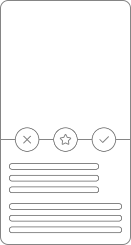
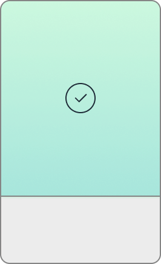
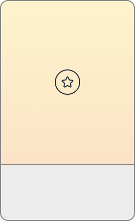
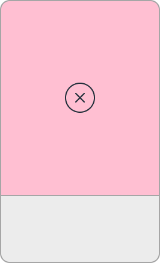

Cards de usuarios que podrás visualizar y enfatizar a tu gusto
Al hacer touch en el card se mostrará la información del usuario

Al darle touch al ícono derecho te mostrarán usuarios parecidos

Al darle touch al ícono del centro podrás guardarlos en una lista de favoritos

Al darle touch al ícono de izquierda podrás descartar usuarios

Realiza filtros de los cards principales en base a lugar, edad, personas cercanos a ti y deacuerdo a tus gustos y preferencias
Touch en un usuario destacado y podrás visualizar su información en el card principal
Realiza filtros de los usuarios destacados en base a lugar, edad, personas cercanos a ti y deacuerdo a tus gustos y preferencias